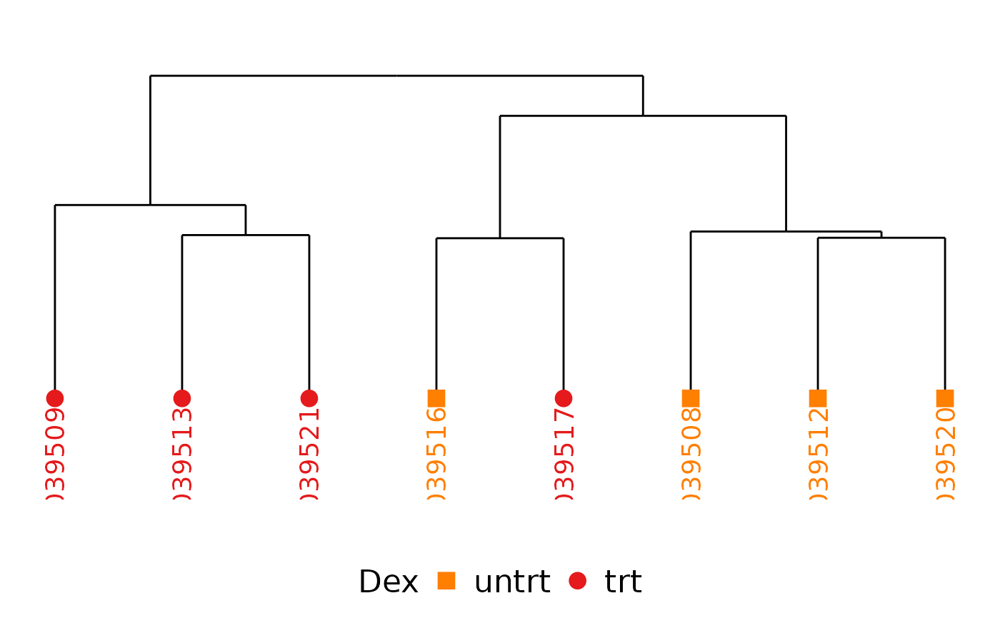
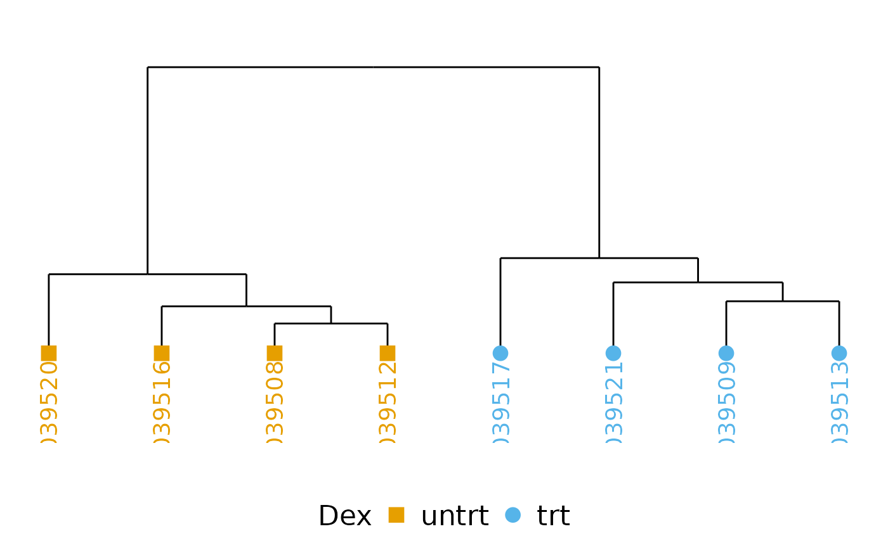

Make a clustering dendrogram with coloring by experimental variable
Source:R/dendro.R
clusteringDendrogram.RdA simple function using ggdendro to make a sample dendrogram
Usage
clusteringDendrogram(
plotmatrix,
experiment,
colorby = NULL,
cor_method = "pearson",
cluster_method = "ward.D",
plot_title = "",
labelspace = 0.2,
palette = NULL,
palette_name = COLORBLIND_PALETTE_NAME
)Arguments
- plotmatrix
Expression/ other data matrix
- experiment
Annotation for the columns of plotmatrix
- colorby
Column name in
experimentspecifying how boxes should be colored- cor_method
Correlation method, passed to cor() (default: pearson).
- cluster_method
Clustering method, passed to hclust() (default: ward.D).
- plot_title
Plot title
- labelspace
Vertical fraction of plot to be used for labels (default: 0.2).
- palette
Palette of colors, one for each unique value derived from
colorby.- palette_name
Valid R color palette name
Examples
# Make a dendrogram with the data in airway
require(airway)
data(airway, package = "airway")
clusteringDendrogram(assays(airway)[[1]], data.frame(colData(airway)), colorby = "dex")

# Do the same, but only usig the 1000 most variant rows and see how the
# clustering improves.
mymatrix <- assays(airway)[[1]]
mymatrix <- mymatrix[order(apply(mymatrix, 1, var), decreasing = TRUE)[1:1000], ]
clusteringDendrogram(mymatrix, data.frame(colData(airway)), colorby = "dex")
